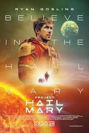

Science teacher Ryland Grace (Ryan Gosling) wakes up on a spaceship light years from home with no recollection of who he is or how he got there. As his memory returns, he begins to uncover his mission: solve the riddle of the mysterious substance causing the sun to die out. He must call on his scientific knowledge and unorthodox ideas to save everything on Earth from extinction... but an unexpected friendship means he may not have to do it alone.